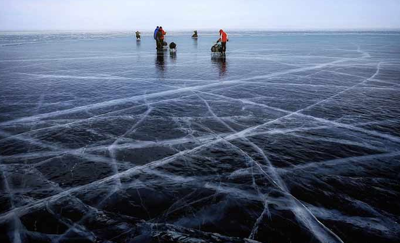
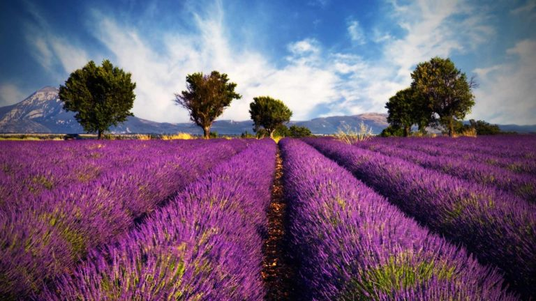

Traveler's catalog
Представляем вашему вниманию каталог самых удивительных мест
которые вы обязаны посетить !
Дорога гигантов - Эта ирландская достопримечательность также возникла из-за вулканического вмешательства.
Благодаря извержению, которое произошло много веков назад, в море было 40 000 базальтовых колонн, уходящих в море
как шаги для самого настоящего великана.

Озеро Байкал - самое глубокое озеро в мире.
Его глубина составляет 1642 метра. Это целый мир, красотой которого можно наслаждаться снова и снова.
И каждый раз вы будете открывать для себя что-то новое в этой суровой и необычной стране.
Ведь невозможно увидеть все уголки Священного озера и узнать обо всех его тайнах за одну поездку.
Американский Гранд-Каньон, пожалуй, самое красивое место в мире.
Она одна из самых глубоких на планете.
Недалеко от города Колорадо, штат Аризона, есть туристическая достопримечательность.
Длина каньона составляет 446 километров, а ширина колеблется от 6 до 29 километров, и это на уровне плато.
На нижнем уровне это место имеет ширину менее километра. Глубина каньона составляет 1600 метров.
Канадские Скалистые горы - привлекают тысячи туристов каждый год.
И не зря, это прекрасное место с горными пейзажами.
Здесь есть озера, каньоны, ледники, водопады, вершины и известняковые пещеры.
Достопримечательность была включена в список объектов Всемирного наследия ЮНЕСКО.

Монастырский комплекс Метеора-Метеора - знаменитые монастырские комплексы,
занимающие огромную территорию недалеко от Каламбаки, которая расположена на севере Греции.
Уникальным является тот факт, что здания расположены на гигантских скалах Фессалии — именно их называют "метеорос",
что в переводе с греческого означает "висящий в воздухе". Как место уединения, территория известна
начиная с одиннадцатого века-богатая многовековая история привлекает паломников и путешественников со всего мира.

Остров Санторини - волшебный остров, расположенный в Эгейском море, на самом юге Киклад.
Санторини более 3500 лет, и следы древних цивилизаций постоянно напоминают нам о богатом прошлом архипелага.
Но меньше всего хочется думать о времени: отдых в окружении вулканических пейзажей и
удивительно синего моря, ухоженных пляжей с разноцветным песком и домиков на открытках со снегом-
белые фасады поистине безмятежны. Люди приходят сюда, чтобы полюбоваться закатами, насладиться моментом,
восстановить внутреннюю гармонию, утраченную в вечной спешке и суете.
Венеция - Вы можете почти бесконечно описывать Венецию и восхищаться ею.
Этот сказочный итальянский город на воде, удобно расположенный на более чем ста островах
соединенный многочисленными мостами, это настоящий рай для романтиков.
Здесь можно прогуляться по узким улочкам, где когда-то гулял очаровательный Казанова, взять
прокатитесь на элегантной гондоле и насладитесь ярким закатом на берегу Венецианской лагуны.
Национальный парк Ленсуа Мараньенсес - Прямо на берегу Атлантического океана находится самый красивый национальный парк Бразилии.
Без сомнения, его следует отнести к самым загадочным местам на нашей планете.
Территорию площадью более тысячи квадратных метров занимают белоснежные песчаные дюны высотой до 40 метров,
между которыми то тут, то там можно увидеть небольшие озера с бирюзовой водой.

Прованс - Среди открыточных пейзажей французской глубинки едва ли найдется больше растиражированных
чем лавандовые поля. Главный "лавандовый" департамент Франции – живописный Прованс-может похвастаться сотнями квадратных метров.
километры этих фантастических инопланетных пейзажей, а в июле и августе
происходит настоящее паломничество восхищенных туристов.
Фудзияма - визитная карточка Японии. Его высота составляет 3776 метров.
Для японцев это место священно, а для туристов – невероятно привлекательно.
Вулкан имеет удивительно симметричный конус. Самый красивый вид на него зимой или ранней весной.
Недалеко от Фудзиямы есть 5 вулканических озер. Восхождение на гору осуществляется в летнее время.
Покорить Фудзияму помогают гиды и хорошо развитая инфраструктура.
"Радужные горы" Чжанъе Данся - Наиболее красиво показаны последствия выветривания и эрозии
в Чжанъе Данься. Это живописное место, известное как Радужные горы Китая,
является национальным геопарком и украшено яркими полосами разных оттенков красного, зеленого и желтого,
образованными микроэлементами. Природа - лучший скульптор и художник. Этот парк - лучшее тому доказательство.
Лофотенские острова - расположены в суровых водах Норвежского моря,
за Полярным кругом. Острова славятся своей невероятно красивой природой.
Пусть близость к Полярному кругу вас не пугает-благодаря теплому Гольфстриму, погода на островах
вполне комфортна. Двумя самыми популярными видами активного отдыха на островах являются рыбная ловля и пешие походы.